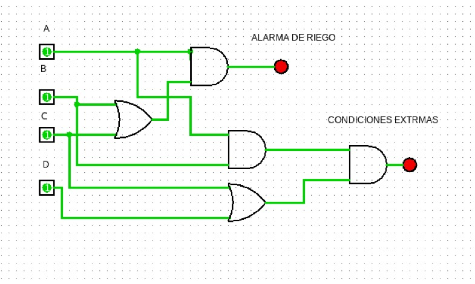
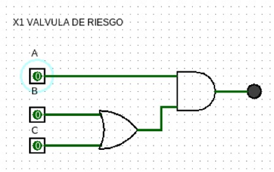
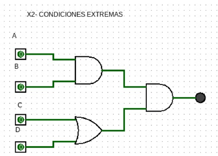

En este proyecto de Lógica de Sistemas se diseñó y analizó un circuito lógico aplicado a un invernadero automatizado, utilizando álgebra booleana. El sistema simula el control de condiciones como temperatura, humedad e iluminación mediante compuertas lógicas, permitiendo activar o desactivar dispositivos según las entradas del circuito. Este proyecto permitió comprender la aplicación de la lógica digital en sistemas reales de automatización, reforzando el uso de expresiones booleanas y el diseño de circuitos combinacionales.


